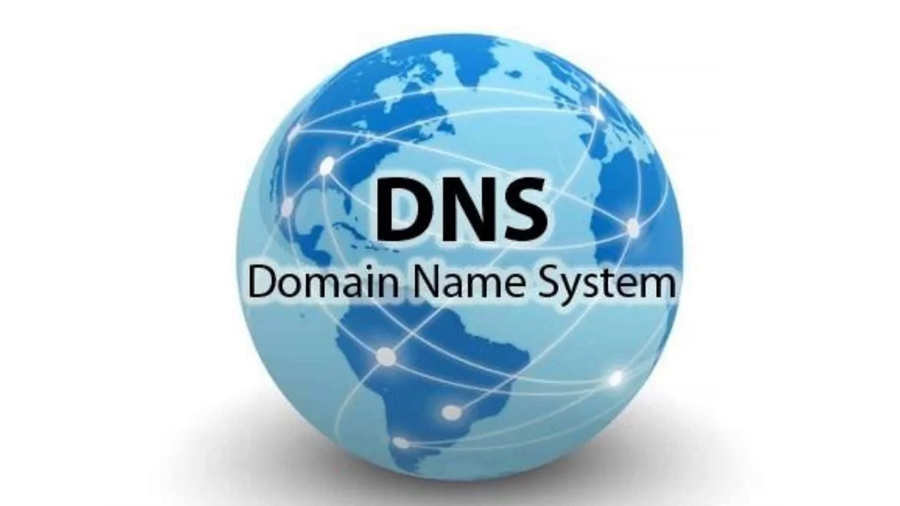

BTS SIO & Compétences
Le BTS Services Informatiques aux Organisations propose deux spécialités complémentaires
Les 6 Compétences E5
C1
Gérer le patrimoine informatique
Recenser et identifier les ressources numériques, exploiter des référentiels et optimiser les ressources.
Exemple : Mise en place d'un inventaire GLPI pour le suivi du matériel informatique

C2
Répondre aux incidents et aux demandes
Collecter, suivre et orienter des demandes, traiter des incidents et des demandes d'assistance.
Exemple : Gestion des tickets d'incidents via clarilog
C3
Développer la présence en ligne
Participer à la valorisation de l'image de l'organisation sur les médias numériques.
Exemple : Création et maintenance d'un site web
C4
Travailler en mode projet
Analyser les objectifs et les modalités d'organisation d'un projet, planifier les activités.
Exemple : Gestion de projet avec méthodologie Agile et diagrammes de Gantt
C5
Mettre à disposition des utilisateurs un service informatique
Réaliser les tests d'intégration et d'acceptation d'un service, déployer un service.
Exemple : Déploiement d'un serveur DHCP/DNS sous Windows Server

C6
Organiser son développement professionnel
Mettre en place son environnement d'apprentissage personnel, maintenir sa culture informatique.
Exemple : Avancement de l'IA et participation à des conférences IT